Possivelmente o único Emporium em Florianópolis com carnes orgânicas. Cortes premium, frango caipira, salmão selvagem do Alasca (distribuidor exclusivo em SC) e mais.
A Cecília está finalizando o detalhamento de produtos desta seção. Em breve, esta página terá a curadoria completa.
Pelos nossos registros, somos o único Emporium em Florianópolis que vende carnes orgânicas. Cortes premium de bovinos criados sem hormônios, sem antibióticos preventivos e em pastagem certificada orgânica.
Frango criado solto, alimentado com ração natural, sem o ciclo industrial agressivo. Carne mais firme, sabor real.
Somos distribuidor exclusivo em Santa Catarina do salmão selvagem do Alasca (parceria com Stone Bone). Diferente do salmão de cativeiro: vive no oceano, alimenta-se naturalmente, tem perfil de gordura completamente diferente.
Tilápia de criação responsável e mexilhão local — selecionados com o mesmo critério dos demais produtos do Emporium.
Uma amostra das carnes, aves, suínos e frutos do mar que passam pela nossa curadoria. A disponibilidade varia conforme a estação e o que chega de cada produtor.
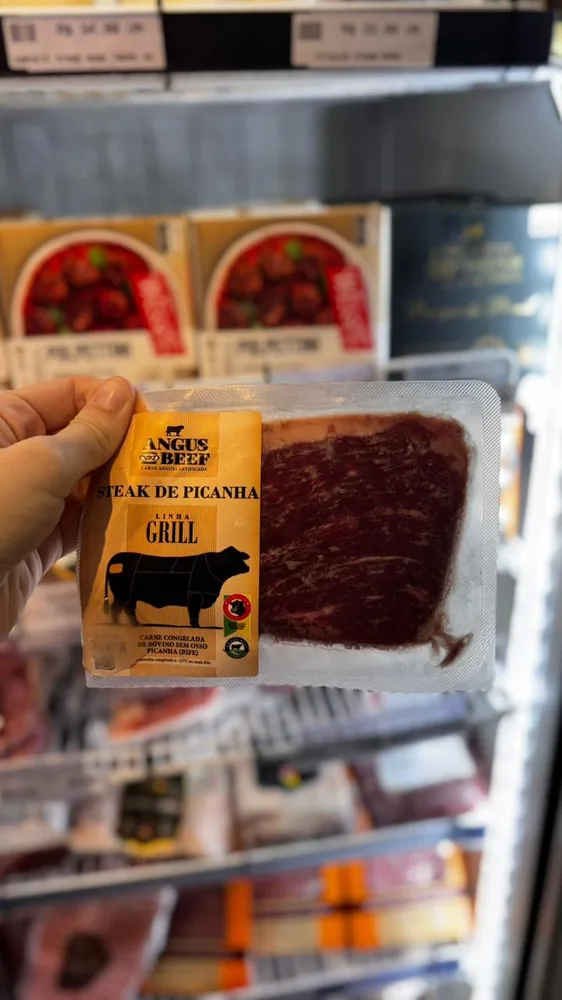
A estrela do churrasco. Picanha em steaks de gado Angus certificado, com o marmoreio característico da raça que garante maciez e um sabor marcante a cada fatia.
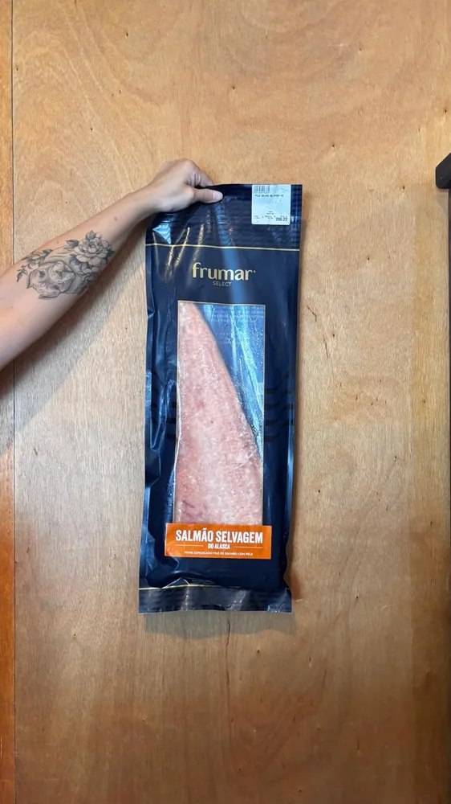
Pescado nas águas frias do Alasca, vive solto no oceano e se alimenta naturalmente — perfil de ômega-3 e gordura bem diferente do salmão de cativeiro. Distribuição exclusiva nossa em SC.
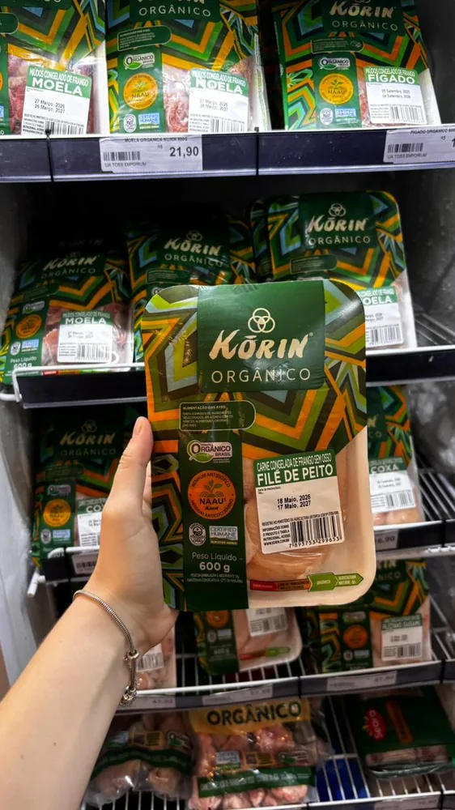
Frango orgânico criado sem antibióticos nem coccidiostáticos, com bem-estar animal Certified Humane. Peito sem osso, magro e versátil para o dia a dia.
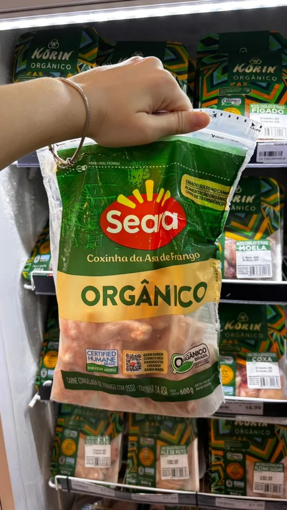
Coxinhas da asa de frango orgânico, de criação com bem-estar certificado. Douram por fora e ficam suculentas por dentro — prontas para o forno ou a grelha.
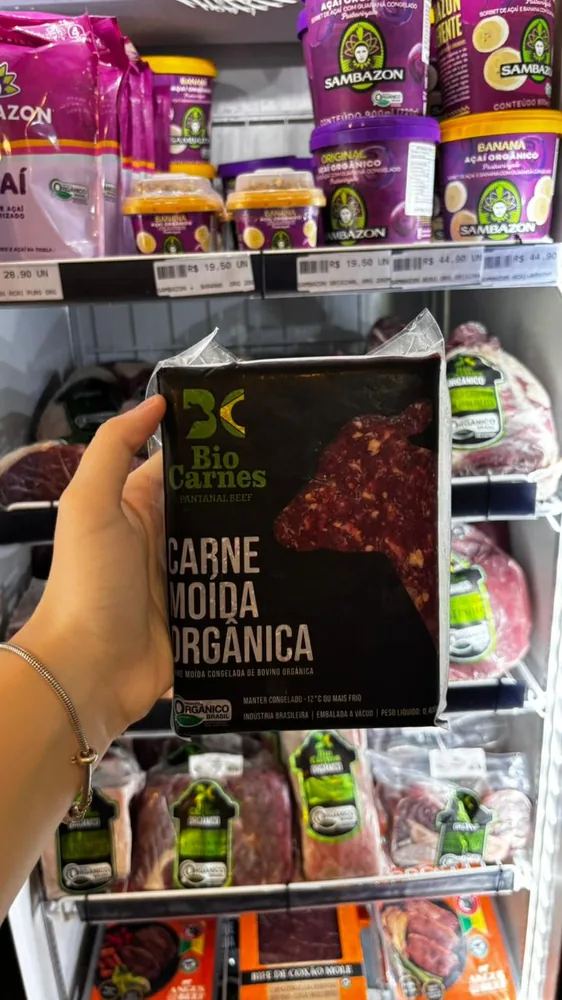
Carne bovina moída de gado criado em pastagem orgânica certificada, sem hormônios. Uma base limpa e saborosa para molhos, hambúrgueres caseiros e recheios.
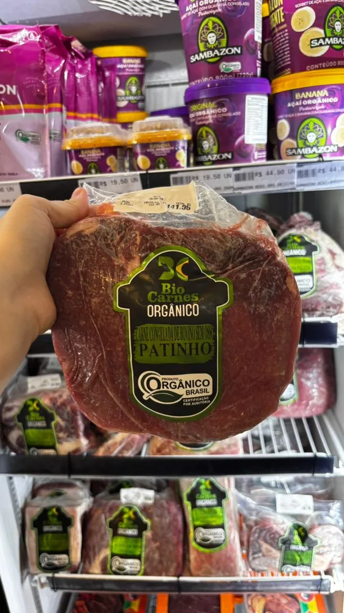
Corte magro do traseiro bovino, de animais criados em sistema orgânico certificado. Versátil de verdade: rende bifes, ensopados, escalopes e a melhor moída da casa.
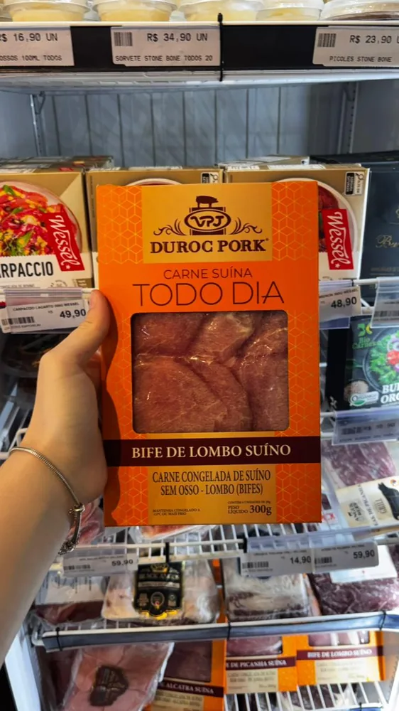
A raça Duroc é reconhecida pelo marmoreio e pela maciez. Bifes de lombo suculentos, de cor avermelhada e sabor intenso — pegam bem na frigideira e na grelha.
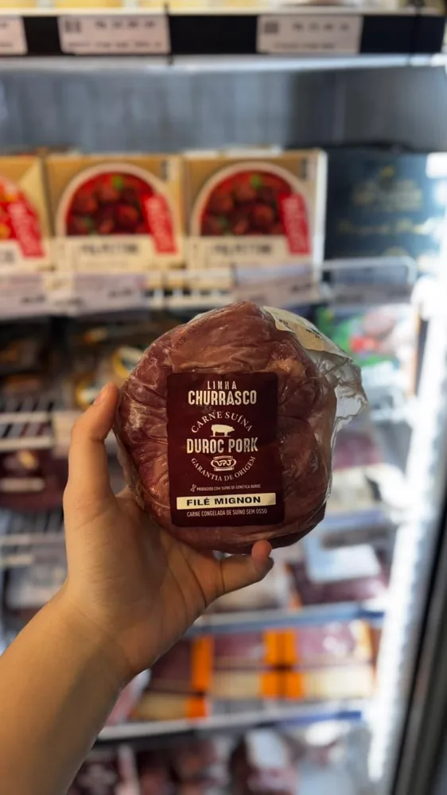
O corte mais macio do suíno Duroc, da linha churrasco. Magro, delicado e de cocção rápida — fica ótimo grelhado inteiro ou em medalhões.
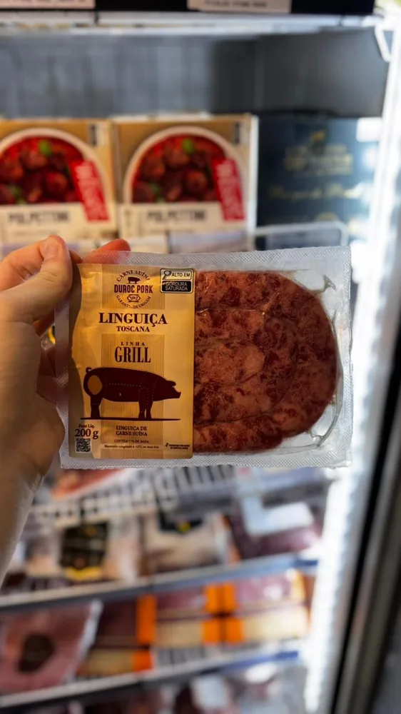
Linguiça toscana de carne suína temperada no ponto, pensada para a churrasqueira. Suculenta e levemente apimentada — não pode faltar no espetinho de fim de semana.
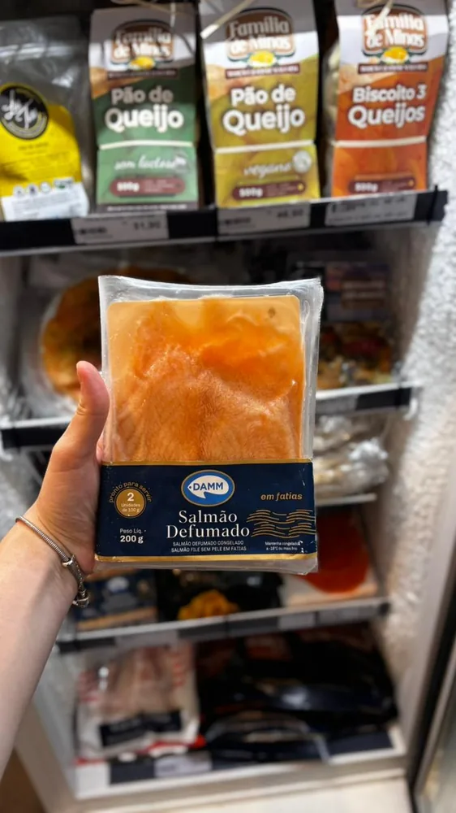
Fatias de salmão defumado a frio, prontas para servir. Textura sedosa e sabor delicado — perfeito em torradas, canapés, bagels e tábuas de entrada.
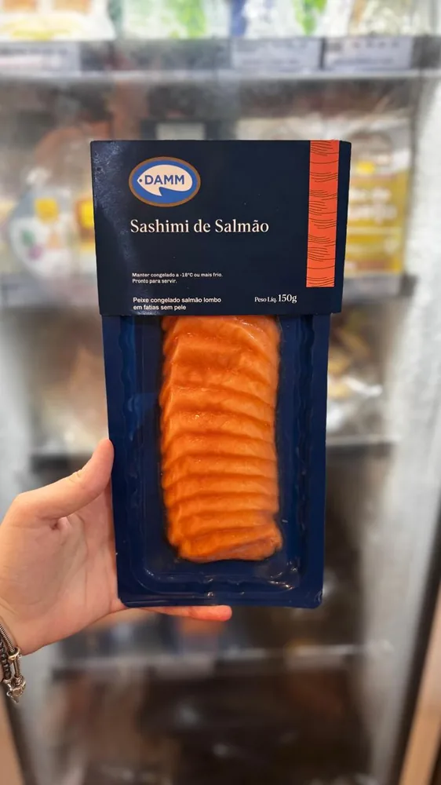
Salmão já fatiado no padrão sashimi, com corte limpo e frescor preservado. Pratos japoneses montados em casa, sem trabalho e sem perder a qualidade.